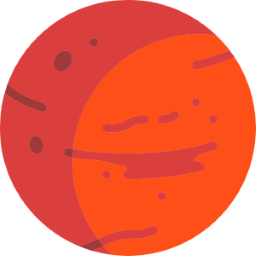
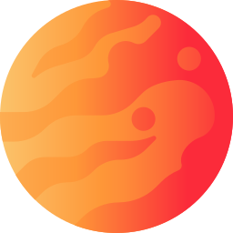

Os Planetas do Sistema Solar

Marte
Marte é conhecido como o "Planeta Vermelho". Uma possível casa para futuras missões espaciais!

Vênus
Vênus é o planeta mais quente do nosso sistema solar, com temperaturas superiores a 460°C.
Júpiter
O maior planeta do nosso sistema solar, Júpiter é conhecido pela sua Grande Mancha Vermelha.

Mercúrio
Mercúrio tem temperaturas extremamente variáveis, com dias muito quentes e noites congelantes.

Terra
A Terra é o único planeta conhecido até agora com água em estado líquido e vida.
Saturno
Saturno é famoso pelos seus imponentes anéis, que são compostos principalmente de gelo e rochas.
Urano
Urano é o único planeta que gira de lado, causando estações extremas e longas.
Netuno
Netuno tem os ventos mais rápidos do Sistema Solar, podendo alcançar até 2.100 km/h.